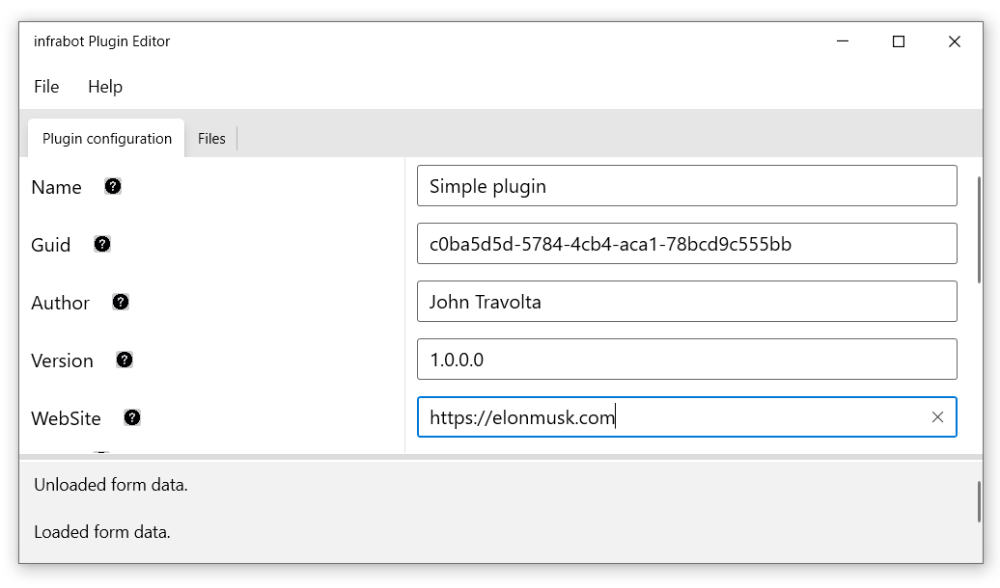
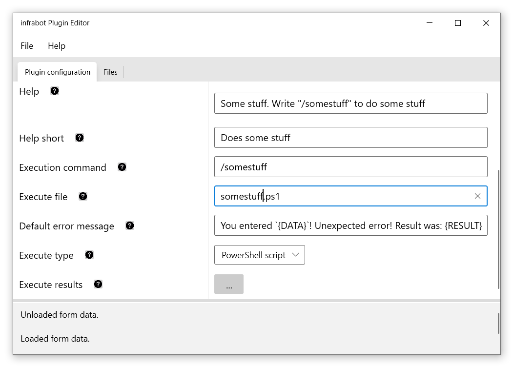
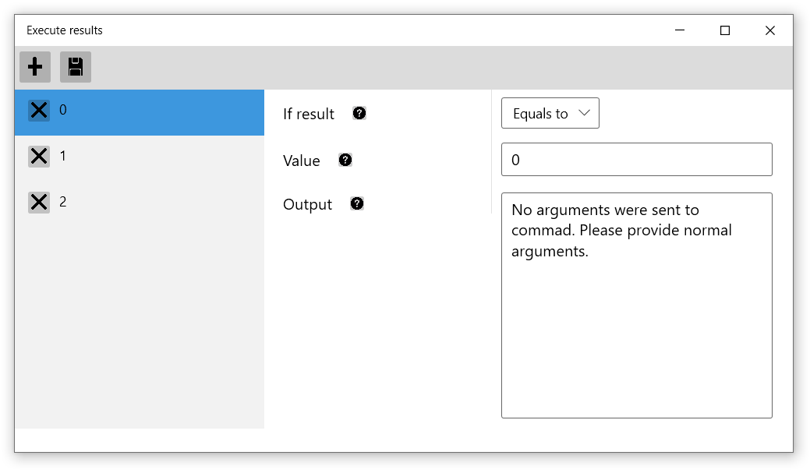
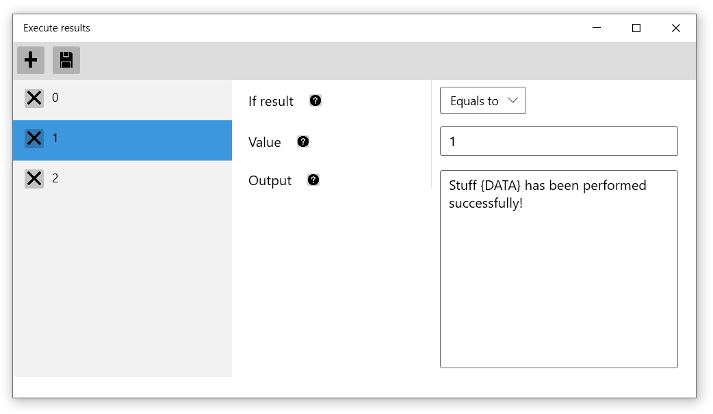
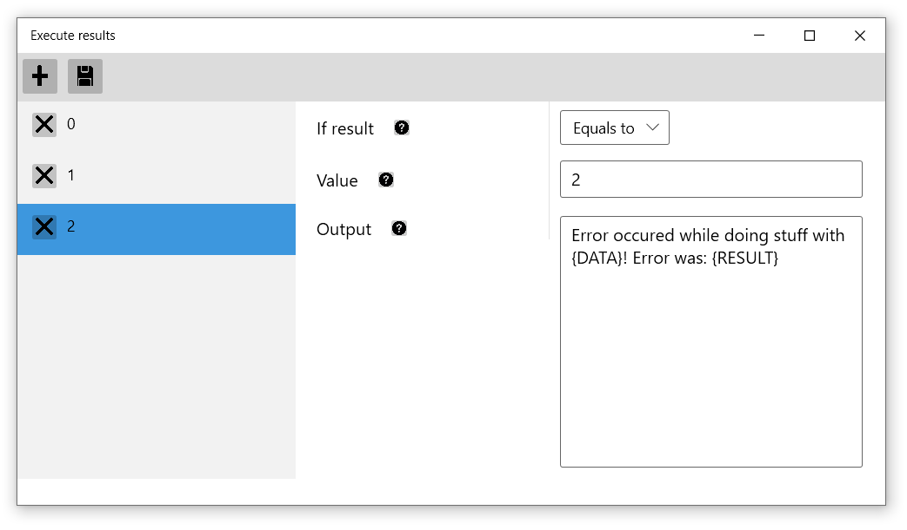
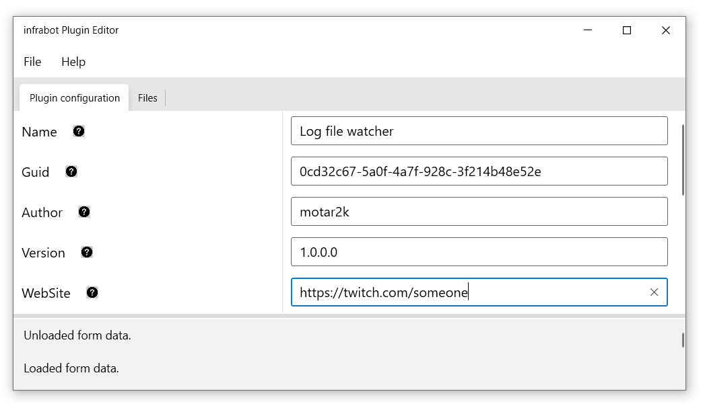
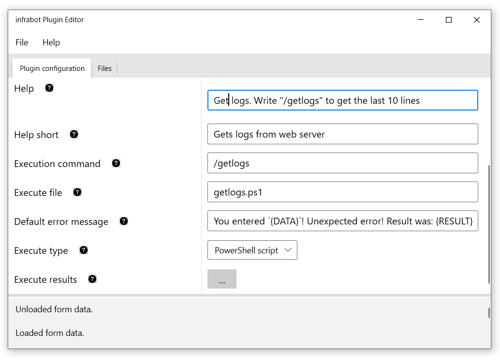
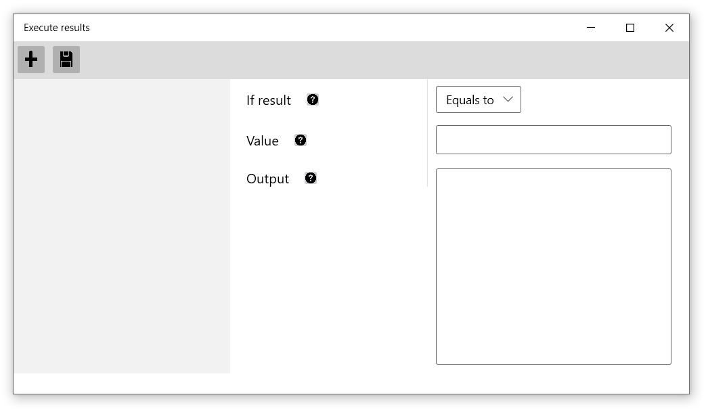
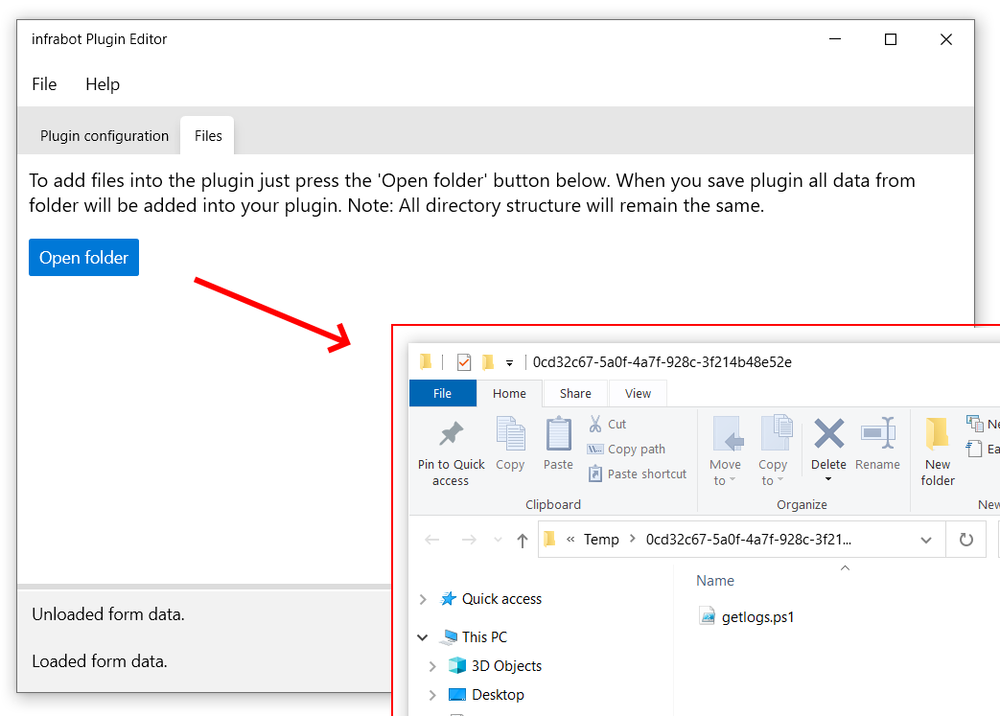

Documentation for infrabot
You can find powershell script examples which can be used as a templates.
Lets say that you want to create a command which accepts one or more arguments and you want to show specific answers based on what PowerShell script returns.
# Check if our arguments count is more than 0
If ($args.Count -gt 0) {
# We are getting the first argument value
$arg1 = $args[0]
# If you have more than 1 arguments you can add this
# $arg2 = $args[1]
# $arg3 = $args[2]
# ... etc
# We put our main script content into TRY CATCH construction to catch errors.
# Your code still can perform without TRY CATCH construction. This is just an
# example.
try {
# Begin Some Cool Stuff
# End of Some Cool stuff
# Now we assume that everything went fine and we output value 1.
# Parameter -NoNewline ensures that no line breaks will be sent to
# script output. It is essential to specify this since we will check
# exact match for this value further in the configuration.
Write-Host -NoNewline 1
}
catch {
# If error happens print 2.
Write-Host -NoNewline 2
}
}
else {
# If script has got no arguments print 0.
Write-Host -NoNewline 0
}
For the given example script configuration in the plugin will be:
    
In this example we will use PowerShell script which returns the last 10 lines of the log file without any execution result checks.
# Some log file path
$FilePath = "C:\logs\some_log.txt"
# Get the last 10 lines of the log file
$Data = Get-Content $FilePath -Tail 10
# Output our data
Write-Host $Data
For the given example script configuration in the plugin will be:
 Note: Execute results window is empty. This is mandatory since we do not want to check script output.
 It is still possible to send any number of arguments to the script from the chat (just type
/getlogs testargument1 testargument2), but its processing
not implemented in the script so it will be pointless.
The same configuration applies to custom application.
Infrabot comes with default set of plugins which are located in the
\plugins folder. You can check them out for learning
purposes.